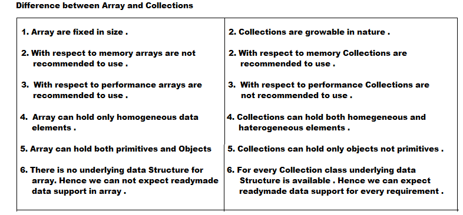

Collection Framework :
- An Array is an indexed collection of fixed no of homogeneous data elements .
- The main advantage of arrays is can represent multiple values by using single variable . So that readability of the code will be improved .
Limitations of Object type Arrays :
- Arrays are fixed in size i.e once we created an array there is no chance of increasing and decreasing the size based on our requirement .
- Hence to use arrays concept compulsory we should know the size in advance, which may not possible always .
- Arrays can hold only homogeneous data types .
Student[] s = new Student[100];
s[0] = new Student();
s[1] = new Customer(); --> CE: incompatible types
found: Customer
required : Student
We can resolve this problem by using Object type arrays .
Object[] o = new Object[100];
a[0] = new Student();
a[1] = new Customer();
- There is no underlying data structure for arrays . Hence readymade data support we can not expect .
For every requirement we have to write code explicitly, which increases complexity of the programming .
- To overcome this problems of arrays we should go for Collections .
- Collections are growable in nature i.e based on our requirements we can increase and decrease the size .
- Collections can hold both homogeneous and heterogeneous elements .
- Every Collections class is implemented based on some standard data structure . Hence for every requirement readymade data structure is available .

Interfaces of Collection Framework : -
Collection :
- If we want to represent a group of individual objects as a single entity then we should go for Collection .
- In general Collection interface is consider as root interface of Collection Framework .
- Collection interface defines the most general methods which are applicable for any Collection object .
Difference between Collection and Collections :
- Collection is an interface which is used to represent group of individual objects as a single entity .
- Collections is an utility class present in java.util package to define several utility methods for Collection objects .
The following methods present in Collection class :
- boolean add(Object o)
- boolean addAll(Collection c)
- boolean remove(Object o)
- boolean removeAll(Collection c)// To remove
- boolean retainAll(Collection c)// To remove all objects except those present in 'c'
- void clear()
- boolean contains(Object o)
- boolean containsAll(Collection c)
- boolean isEmpty()
- int size()
- Object[] toArray()
- Iterator iterator()
List :
- It is the child interface of Collection .
- If we want to represent a group of individual objects where duplicates are allowed and insertion order preserved then we should go for List .
- We can preserve insertion order and differentiate duplicate object by using index , hence index will play very important role in List .
- List interface defines the following specific methods
- void add(int index, Object o)
- boolean addAll(int index, Collection c)
- Object get(int index)
- Object remove(int index)
- Object set(int index,Object o)// To replace the element present at specified index with provided Object and returns old object .
- int indexOf(Object o)// return index of first occurrence of 'o'
- int lastIndexOf(Object o)
- ListIterator listIterator()